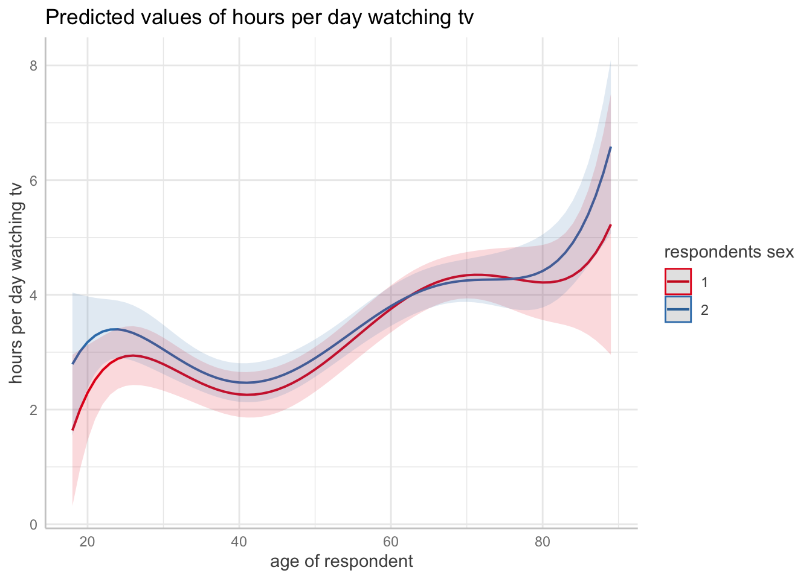
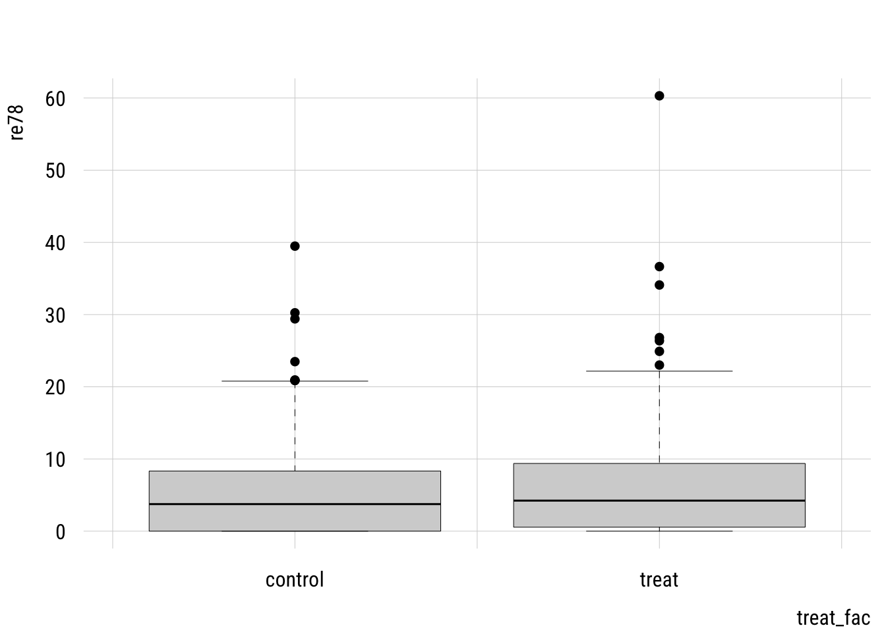
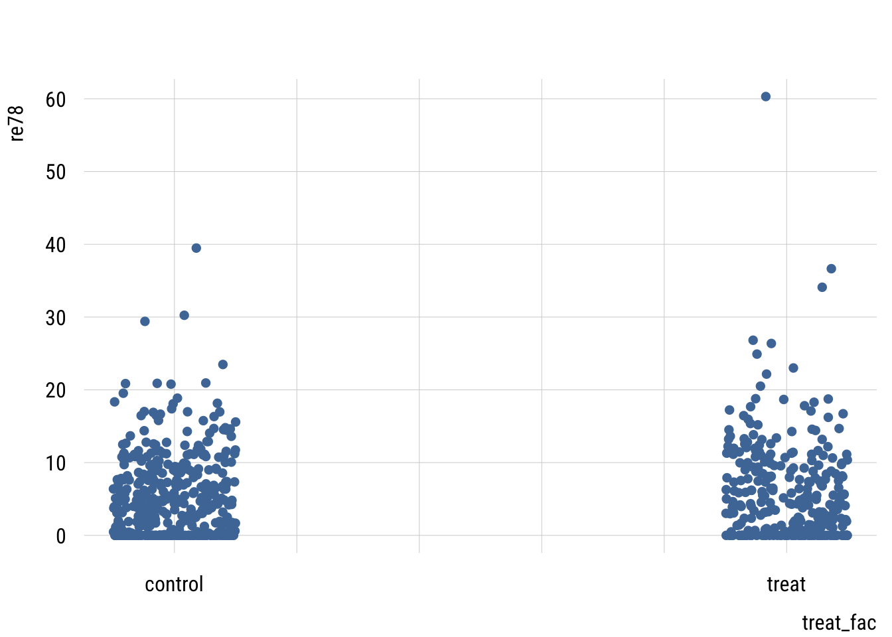
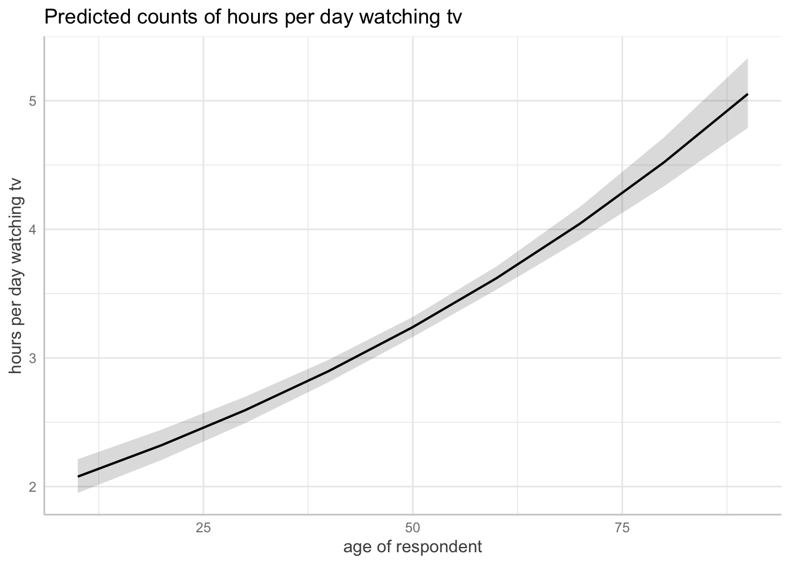

pacman::p_load(dplyr,
tidyr,
broom,
stringr,
emmeans,
modelsummary,
marginaleffects,
ggeffects,
tinyplot,
ggplot2)Chapter 11
Goals
To finish the ANOVA/ANCOVA section with our dignity intact.
Set up
tinytheme("ipsum",
family = "Roboto Condensed",
palette.qualitative = "Tableau 10",
palette.sequential = "agSunset")# Match tinyplot ipsum style
theme_set(
theme_minimal(base_family = "Roboto Condensed") +
theme(panel.grid.minor = element_blank())
)
# Match Tableau 10 palette used by tinytheme (hex codes from ggthemes)
tableau10 <- c("#5778a4", "#e49444", "#d1615d", "#85b6b2", "#6a9f58",
"#e7ca60", "#a87c9f", "#f1a2a9", "#967662", "#b8b0ac")
options(
ggplot2.discrete.colour = \() scale_color_manual(values = tableau10),
ggplot2.discrete.fill = \() scale_fill_manual(values = tableau10)
)gss <- readRDS("data/gss2024.rds") |>
select(id, tvhours, sex, degree, age) |>
drop_na() |>
haven::zap_labels()m1 <- lm(tvhours ~ poly(age, 5) * factor(sex),
data = gss)
summary(m1)
Call:
lm(formula = tvhours ~ poly(age, 5) * factor(sex), data = gss)
Residuals:
Min 1Q Median 3Q Max
-5.5857 -1.7370 -0.7111 0.7383 21.3271
Coefficients:
Estimate Std. Error t value Pr(>|t|)
(Intercept) 3.2063 0.1074 29.865 < 2e-16 ***
poly(age, 5)1 32.5273 4.8049 6.770 1.67e-11 ***
poly(age, 5)2 9.3945 4.9895 1.883 0.0599 .
poly(age, 5)3 -8.8778 5.0950 -1.742 0.0816 .
poly(age, 5)4 -5.7797 5.1326 -1.126 0.2603
poly(age, 5)5 12.3663 4.9872 2.480 0.0132 *
factor(sex)2 0.1949 0.1432 1.361 0.1737
poly(age, 5)1:factor(sex)2 -5.5344 6.5316 -0.847 0.3969
poly(age, 5)2:factor(sex)2 7.1800 6.5927 1.089 0.2762
poly(age, 5)3:factor(sex)2 2.2800 6.6310 0.344 0.7310
poly(age, 5)4:factor(sex)2 6.4230 6.6633 0.964 0.3352
poly(age, 5)5:factor(sex)2 -0.3673 6.6066 -0.056 0.9557
---
Signif. codes: 0 '***' 0.001 '**' 0.01 '*' 0.05 '.' 0.1 ' ' 1
Residual standard error: 3.235 on 2074 degrees of freedom
Multiple R-squared: 0.05789, Adjusted R-squared: 0.05289
F-statistic: 11.58 on 11 and 2074 DF, p-value: < 2.2e-16ggpredict(m1, terms = c("age", "sex")) |> plot()
checkpoly <- function(n) {
tmp <- lm(tvhours ~ poly(age, n) * factor(sex),
data = gss)
glance(tmp)[1,8]
}Let’s look at an experiment.
d <- readRDS("data/lalonde_exp.rds") |>
mutate(treat_fac = factor(treat,
labels = c("control", "treat")))plt(re78 ~ treat_fac,
data = d,
type = "box")
plt(re78 ~ treat_fac,
data = d,
type = type_jitter(factor = .5))
m1 <- lm(re78 ~ treat_fac,
data = d)
summary(m1)
Call:
lm(formula = re78 ~ treat_fac, data = d)
Residuals:
Min 1Q Median 3Q Max
-5.976 -5.090 -1.519 3.361 54.332
Coefficients:
Estimate Std. Error t value Pr(>|t|)
(Intercept) 5.0900 0.3028 16.811 <2e-16 ***
treat_factreat 0.8863 0.4721 1.877 0.0609 .
---
Signif. codes: 0 '***' 0.001 '**' 0.01 '*' 0.05 '.' 0.1 ' ' 1
Residual standard error: 6.242 on 720 degrees of freedom
Multiple R-squared: 0.004872, Adjusted R-squared: 0.003489
F-statistic: 3.525 on 1 and 720 DF, p-value: 0.06086m2 <- lm(re78 ~ treat_fac + re75,
data = d)
summary(m2)
Call:
lm(formula = re78 ~ treat_fac + re75, data = d)
Residuals:
Min 1Q Median 3Q Max
-10.188 -4.512 -1.498 3.104 54.672
Coefficients:
Estimate Std. Error t value Pr(>|t|)
(Intercept) 4.51238 0.32932 13.702 < 2e-16 ***
treat_factreat 0.87878 0.46671 1.883 0.0601 .
re75 0.19086 0.04536 4.207 2.91e-05 ***
---
Signif. codes: 0 '***' 0.001 '**' 0.01 '*' 0.05 '.' 0.1 ' ' 1
Residual standard error: 6.171 on 719 degrees of freedom
Multiple R-squared: 0.02878, Adjusted R-squared: 0.02608
F-statistic: 10.65 on 2 and 719 DF, p-value: 2.756e-05m_diff <- lm(I(re78 - re75) ~ treat_fac,
data = d)
summary(m_diff)
Call:
lm(formula = I(re78 - re75) ~ treat_fac, data = d)
Residuals:
Min 1Q Median 3Q Max
-37.995 -3.198 -1.442 3.677 56.114
Coefficients:
Estimate Std. Error t value Pr(>|t|)
(Intercept) 2.0634 0.3593 5.743 1.37e-08 ***
treat_factreat 0.8469 0.5601 1.512 0.131
---
Signif. codes: 0 '***' 0.001 '**' 0.01 '*' 0.05 '.' 0.1 ' ' 1
Residual standard error: 7.406 on 720 degrees of freedom
Multiple R-squared: 0.003165, Adjusted R-squared: 0.00178
F-statistic: 2.286 on 1 and 720 DF, p-value: 0.131m2_constrained <- lm(re78 ~ treat_fac,
offset = re75,
data = d)
summary(m2_constrained)
Call:
lm(formula = re78 ~ treat_fac, data = d, offset = re75)
Residuals:
Min 1Q Median 3Q Max
-37.995 -3.198 -1.442 3.677 56.114
Coefficients:
Estimate Std. Error t value Pr(>|t|)
(Intercept) 2.0634 0.3593 5.743 1.37e-08 ***
treat_factreat 0.8469 0.5601 1.512 0.131
---
Signif. codes: 0 '***' 0.001 '**' 0.01 '*' 0.05 '.' 0.1 ' ' 1
Residual standard error: 7.406 on 720 degrees of freedom
Multiple R-squared: 0.003165, Adjusted R-squared: 0.00178
F-statistic: 2.286 on 1 and 720 DF, p-value: 0.131m3 <- lm(re78 ~ treat_fac + re75 + re74 + age + educ +
black + hisp + nodegr + u74 + u75 + married,
data = d)
summary(m3)
Call:
lm(formula = re78 ~ treat_fac + re75 + re74 + age + educ + black +
hisp + nodegr + u74 + u75 + married, data = d)
Residuals:
Min 1Q Median 3Q Max
-10.395 -4.431 -1.455 3.189 53.911
Coefficients:
Estimate Std. Error t value Pr(>|t|)
(Intercept) 3.18568 2.63786 1.208 0.2276
treat_factreat 0.82365 0.46846 1.758 0.0791 .
re75 0.06472 0.09145 0.708 0.4794
re74 0.12741 0.07526 1.693 0.0909 .
age 0.01024 0.03707 0.276 0.7824
educ 0.20059 0.18052 1.111 0.2669
black -1.41919 0.80195 -1.770 0.0772 .
hisp 0.29929 1.05046 0.285 0.7758
nodegr -0.29961 0.74798 -0.401 0.6889
u74 1.52993 0.93782 1.631 0.1033
u75 -1.00584 0.91702 -1.097 0.2731
married 0.04854 0.65220 0.074 0.9407
---
Signif. codes: 0 '***' 0.001 '**' 0.01 '*' 0.05 '.' 0.1 ' ' 1
Residual standard error: 6.147 on 710 degrees of freedom
Multiple R-squared: 0.04827, Adjusted R-squared: 0.03353
F-statistic: 3.274 on 11 and 710 DF, p-value: 0.0002169m4 <- lm(re78 ~ treat + re75 + I(re75^2) + re74 + I(re74^2)
+ age + I(age^2) + educ + I(educ^2) + black + hisp + married
+ nodegr + u74 + u75,
data = d)
summary(m4)
Call:
lm(formula = re78 ~ treat + re75 + I(re75^2) + re74 + I(re74^2) +
age + I(age^2) + educ + I(educ^2) + black + hisp + married +
nodegr + u74 + u75, data = d)
Residuals:
Min 1Q Median 3Q Max
-11.465 -4.435 -1.491 3.296 53.923
Coefficients:
Estimate Std. Error t value Pr(>|t|)
(Intercept) 10.985771 5.330026 2.061 0.0397 *
treat 0.813809 0.468155 1.738 0.0826 .
re75 0.181010 0.193615 0.935 0.3502
I(re75^2) -0.003420 0.006532 -0.524 0.6007
re74 -0.182819 0.180101 -1.015 0.3104
I(re74^2) 0.010120 0.005322 1.902 0.0576 .
age -0.134437 0.216422 -0.621 0.5347
I(age^2) 0.002486 0.003606 0.689 0.4909
educ -1.181805 1.014489 -1.165 0.2444
I(educ^2) 0.079069 0.055673 1.420 0.1560
black -1.418940 0.800419 -1.773 0.0767 .
hisp 0.265324 1.049633 0.253 0.8005
married 0.152768 0.654873 0.233 0.8156
nodegr 0.312865 0.910017 0.344 0.7311
u74 0.712339 1.036152 0.687 0.4920
u75 -0.947228 0.968743 -0.978 0.3285
---
Signif. codes: 0 '***' 0.001 '**' 0.01 '*' 0.05 '.' 0.1 ' ' 1
Residual standard error: 6.132 on 706 degrees of freedom
Multiple R-squared: 0.05846, Adjusted R-squared: 0.03846
F-statistic: 2.922 on 15 and 706 DF, p-value: 0.0001621m5 <- lm(re78 ~ treat * (re75 + re74 + age + educ + nodegr +
black + hisp + married),
data = d)
summary(m5)
Call:
lm(formula = re78 ~ treat * (re75 + re74 + age + educ + nodegr +
black + hisp + married), data = d)
Residuals:
Min 1Q Median 3Q Max
-11.444 -4.335 -1.603 3.298 54.374
Coefficients:
Estimate Std. Error t value Pr(>|t|)
(Intercept) 6.517070 3.437699 1.896 0.0584 .
treat -6.551504 5.241558 -1.250 0.2117
re75 0.210366 0.112566 1.869 0.0621 .
re74 0.068945 0.088207 0.782 0.4347
age -0.011283 0.046925 -0.240 0.8101
educ -0.015309 0.242965 -0.063 0.9498
nodegr -0.632323 1.004967 -0.629 0.5294
black -1.589615 1.084345 -1.466 0.1431
hisp 0.539836 1.371852 0.394 0.6941
married -1.012499 0.857109 -1.181 0.2379
treat:re75 -0.261151 0.181527 -1.439 0.1507
treat:re74 0.000318 0.149470 0.002 0.9983
treat:age 0.057136 0.073886 0.773 0.4396
treat:educ 0.517990 0.361004 1.435 0.1518
treat:nodegr 0.852859 1.502433 0.568 0.5705
treat:black 0.589770 1.606731 0.367 0.7137
treat:hisp -0.801334 2.132576 -0.376 0.7072
treat:married 2.418215 1.320962 1.831 0.0676 .
---
Signif. codes: 0 '***' 0.001 '**' 0.01 '*' 0.05 '.' 0.1 ' ' 1
Residual standard error: 6.123 on 704 degrees of freedom
Multiple R-squared: 0.06363, Adjusted R-squared: 0.04101
F-statistic: 2.814 on 17 and 704 DF, p-value: 0.0001321avg_slopes(m5, variables = "treat")
Estimate Std. Error z Pr(>|z|) S 2.5 % 97.5 %
0.819 0.466 1.76 0.079 3.7 -0.0947 1.73
Term: treat
Type: response
Comparison: 1 - 0m1 <- glm(tvhours ~ age,
data = gss,
family = poisson())
summary(m1)
Call:
glm(formula = tvhours ~ age, family = poisson(), data = gss)
Coefficients:
Estimate Std. Error z value Pr(>|z|)
(Intercept) 0.6199166 0.0385197 16.09 <2e-16 ***
age 0.0111123 0.0006796 16.35 <2e-16 ***
---
Signif. codes: 0 '***' 0.001 '**' 0.01 '*' 0.05 '.' 0.1 ' ' 1
(Dispersion parameter for poisson family taken to be 1)
Null deviance: 5366.4 on 2085 degrees of freedom
Residual deviance: 5098.1 on 2084 degrees of freedom
AIC: 10657
Number of Fisher Scoring iterations: 5ggpredict(m1, terms = "age") |> plot()
d <- d |>
mutate(re78 = floor(re78 * 1000),
re75 = floor(re75 * 1000),
re74 = floor(re74 * 1000))
m1 <- glm(re78 ~ treat_fac,
data = d,
family = poisson())
summary(m1)
Call:
glm(formula = re78 ~ treat_fac, family = poisson(), data = d)
Coefficients:
Estimate Std. Error z value Pr(>|z|)
(Intercept) 8.5349735 0.0006799 12553.4 <2e-16 ***
treat_factreat 0.1605231 0.0010127 158.5 <2e-16 ***
---
Signif. codes: 0 '***' 0.001 '**' 0.01 '*' 0.05 '.' 0.1 ' ' 1
(Dispersion parameter for poisson family taken to be 1)
Null deviance: 4851711 on 721 degrees of freedom
Residual deviance: 4826748 on 720 degrees of freedom
AIC: 4832200
Number of Fisher Scoring iterations: 5